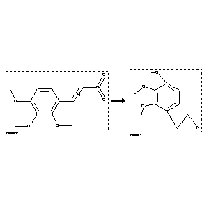

 |
| FA | RX(1); FLST(1); RX(3) |
Reaction (1 of 1)
| Reaction ID | 422391 |
| Reactant BRN | 3148429 |
| Reactant | trans-b-nitro-2.3.4-trimethoxy-styrene |
| Product BRN | 1642360 |
| Product | 2,3,4-trimethoxy-phenethylamine |
| No. of Reaction Details | 3 |
Reaction Details (1 of 1)
| Reaction Classification | Preparation |
| Reagent | aqueous hydrochloric acid; acetic acid; ethanol |
| Other Conditions | Reduktion an Blei-Kathoden |
| Comment | Handbook |
| Citation Pointer | 1594902; Journal; Slotta; Szyszka; JPCEAO; J.Prakt.Chem.; <2> 137; 1933; 339, 349; |
Reaction Details (2 of 1)
| Reaction Classification | Preparation |
| Yield | 91 percent (BRN=1642360) |
| Reagent | LiBH4/Me3SiCl |
| Solvent | tetrahydrofuran |
| Time | 24 hour(s) |
| Other Conditions | Ambient temperature |
| Citation Pointer | 5690195; Journal; Giannis, Athanassios; Sandhoff, Konrad; ANCEAD; Angew.Chem.; GE; 101; 2; 1989; 220-222; |
Reaction Details (3 of 1)
| Reaction Classification | Preparation |
| Yield | 91 percent (BRN=1642360) |
| Reagent | glacial acetic acid, concd. sulfuric acid, hydrogen |
| Catalyst | palladium(IV) oxide |
| Pressure | 760 |
| Citation Pointer | 5814575; Journal; Banwell, Martin G.; Bonadio, Anna; Turner, Kathleen A.; Ireland, Neil K.; Mackay, Maureen F.; AJCHAS; Aust.J.Chem.; EN; 46; 3; 1993; 325-351; |
Reference (1 of 3)
| Citation Number | 1594902 |
| Document Type | Journal |
| Authors | Slotta; Szyszka |
| CODEN | JPCEAO |
| Journal Title | J.Prakt.Chem. |
| (Series) Volume | <2> 137 |
| Publication Year | 1933 |
| Page | 339, 349 |
Reference (2 of 3)
| Citation Number | 5690195 |
| Document Type | Journal |
| Authors | Giannis, Athanassios; Sandhoff, Konrad |
| CODEN | ANCEAD |
| Journal Title | Angew.Chem. |
| Language Code | GE |
| (Series) Volume | 101 |
| Number | 2 |
| Publication Year | 1989 |
| Page | 220-222 |
Reference (3 of 3)
| Citation Number | 5814575 |
| Document Type | Journal |
| Authors | Banwell, Martin G.; Bonadio, Anna; Turner, Kathleen A.; Ireland, Neil K.; Mackay, Maureen F. |
| CODEN | AJCHAS |
| Journal Title | Aust.J.Chem. |
| Language Code | EN |
| (Series) Volume | 46 |
| Number | 3 |
| Publication Year | 1993 |
| Page | 325-351 |